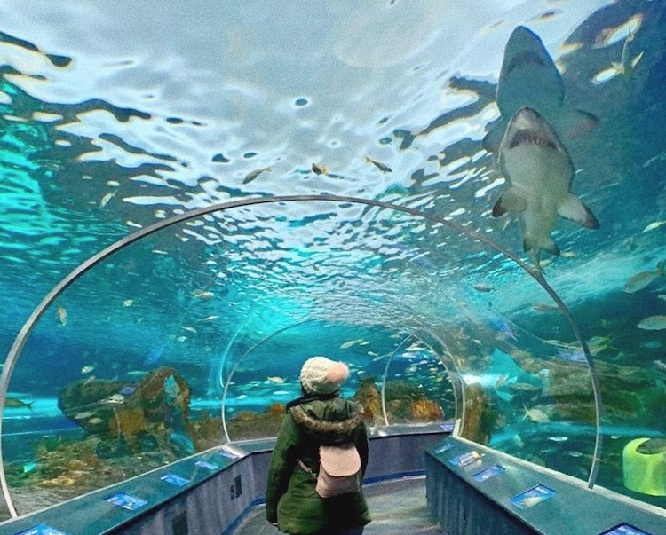

Toronto

Toronto, a capital da província de Ontário, é uma grande cidade canadense localizada ao longo da costa noroeste do Lago Ontário. Ela é uma metrópole dinâmica com um centro de arranha-céus imponentes, todos ofuscados pela famosa Torre CN. Toronto também tem muitos espaços verdes, incluindo desde o oval Queen’s Park até o High Park, com 400 acres de área, além de trilhas, instalações esportivas e um jardim zoológico
Pontos Turisticos

Ripley's Aquarium of Canada é um aquário público em Toronto, Ontário, Canadá. O aquário é um dos três aquários de propriedade e operados pela Ripley Entertainment. Ele está localizado no centro de Toronto, a sudeste da Torre CN. O aquário tem 5,7 milhões de litros de habitats marinhos e de água doce de todo o mundo.